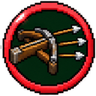
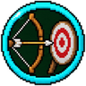
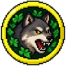

Ranger
Arco e balestra, colpisce gli Enderman
Una classe per personaggio: per cambiarla serve il Reset. Si parte dal primo nodo e dal tronco, poi si sceglie un ramo; si può passare in un ramo vicino una volta sola, e alla fine si prende una sola Abilità Finale.
Primo nodo
+50% danno a distanza, +20% velocità di corsa, +10% velocità d'attacco. Malus: 2 cuori in meno (-4 vita massima), -1 armatura, -25% danno in mischia. Fa tanti danni, ma ne prende più degli altri. Le tue frecce colpiscono anche gli Enderman. Non può usare gli scudi.
Tronco
Frecce, tridenti lanciati e proiettili: +5% danno. Le tue frecce colpiscono anche gli Enderman.
Le frecce di arco e balestra partono il 10% più veloci (e fanno più danno).
Rami

Frecce della balestra: +5% danno. Da qui sei un Balestriere: l'incantesimo Potenza funziona anche sulla balestra, come sull'arco. Le cadute ti fanno il 12,5% di danni in meno.
Le balestre si caricano il 5% più in fretta. Le cadute ti fanno il 12,5% di danni in meno.
+2 vita massima (1 cuore) e +1 armatura.
Nodo proprio del ramo: +10% danno con la balestra. Da vicino (entro 10 blocchi) le frecce della balestra fanno il 20% di danno in più, da lontano (oltre 20 blocchi) il 20% in meno. Prenderlo chiude i punti d'incontro: resti nel tuo ramo.
Le frecce della balestra trapassano un nemico in più. +2 vita massima (1 cuore).
Strada Mitragliere. Ogni colpo a segno di fila fa caricare la balestra il 5% più in fretta, fino al 20%. +2 vita massima (1 cuore) e +1 armatura.
Strada Mitragliere. Con la balestra in mano spari 5 frecce a ventaglio davanti a te (circa 6 danni l'una). Ricarica 12 secondi.
Strada Cacciatore di taglie. I colpi di balestra rallentano il nemico per 1 secondo. +2 vita massima (1 cuore) e +1 armatura.
Strada Cacciatore di taglie. Il primo colpo di balestra su un nemico lo blocca al suolo per 2 secondi (una volta ogni 20 secondi).

Frecce, tridenti lanciati e proiettili: +5% danno.
Tendi l'arco e carichi la balestra il 5% più in fretta.
+10% danno contro i mob ostili (non contro i giocatori).
Nodo proprio del ramo: +10% danno a distanza. Il primo nemico che colpisci viene marchiato: per 8 secondi prende il 10% di danni in più da te e dai compagni. Prenderlo chiude i punti d'incontro: resti nel tuo ramo.
Piazzi una trappola invisibile: il primo nemico che ci passa sopra fa scattare una mega tagliola di ferro che si chiude e lo schiaccia (6 danni, l'armatura conta) e resta bloccato 3 secondi. Ricarica 2 minuti.
Strada Esploratore. Accovacciato i mob ti notano da metà della distanza solita.
Strada Esploratore. La trappola fa anche 6 danni ai nemici entro 3 blocchi.
Strada Segugio. Le tue frecce fanno sanguinare: 1 danno al secondo per 4 secondi.
Strada Segugio. Chi è marchiato o bloccato in una trappola prende il 15% di danni in più dalle tue frecce.
Frecce, tridenti lanciati e proiettili: +5% danno.
Tendi l'arco e carichi la balestra il 5% più in fretta.
Le frecce di arco e balestra partono il 10% più veloci (e fanno più danno).
Nodo proprio del ramo: +10% danno a distanza. Tendi l'arco e carichi la balestra il 5% più in fretta. Prenderlo chiude i punti d'incontro: resti nel tuo ramo.
Potere: per 10 secondi la prossima freccia a piena carica apre un cerchio nel cielo sopra il punto colpito e ne cadono 3 ondate di frecce, una al secondo (8 danni a freccia: al massimo 24 sui mob, 8 sui giocatori). Il danno non lo riduce l'armatura. Ricarica 5 minuti.
Strada Fantasma. Fermo e accovacciato per 2 secondi, i mob smettono di vederti.
Strada Fantasma. Il primo colpo che tiri mentre i mob non ti vedono fa il 40% di danno in più.
Strada Sopravvissuto. Scatta da solo: sotto il 30% di vita per 6 secondi ti muovi il 20% più veloce e prendi il 15% di danni in meno. Ricarica 3 minuti.
Strada Sopravvissuto. Il cibo ti cura 1 cuore in più.

Frecce dell'arco: +5% danno. Le cadute ti fanno il 25% di danni in meno.
Tendi l'arco il 10% più in fretta. Le cadute ti fanno il 25% di danni in meno.
Con l'arco a piena carica le frecce fanno il 10% di danno in più. Corri il 5% più veloce.
Nodo proprio del ramo: +10% danno con l'arco. Da lontano (oltre 20 blocchi) le frecce dell'arco fanno il 20% di danno in più, da vicino (entro 10 blocchi) il 20% in meno. Prenderlo chiude i punti d'incontro: resti nel tuo ramo.
Rotoli di qualche blocco nella direzione in cui stai andando (all'indietro se sei fermo) e per mezzo secondo non prendi danni. Ricarica 7 secondi.
Strada Cecchino. +30% danno con l'arco ai bersagli lontani più di 20 blocchi.
Strada Cecchino. Le frecce dell'arco a piena carica hanno il 15% di probabilità di fare doppio danno.
Strada Vento. Tendi l'arco il 15% più in fretta.
Strada Vento. Dopo una capriola, per 3 secondi la prossima freccia d'arco parte subito a piena carica.
Punti d'incontro
Nodi condivisi tra due rami vicini: da qui si può saltare nell'altro ramo.
Il 15% delle volte che tiri, arco o balestra, la freccia non si consuma. È l'alternativa al nodo proprio del ramo: da qui continui nel tuo ramo o passi in quello accanto, una volta sola in tutto l'albero.
Il nemico colpito brilla per 5 secondi: lo vedi anche attraverso i muri, e lo vedono anche i compagni. È l'alternativa al nodo proprio del ramo: da qui continui nel tuo ramo o passi in quello accanto, una volta sola in tutto l'albero.
Dopo aver colpito un nemico da più di 15 blocchi ti muovi il 15% più veloce per 3 secondi. È l'alternativa al nodo proprio del ramo: da qui continui nel tuo ramo o passi in quello accanto, una volta sola in tutto l'albero.
Abilità Finali
Se ne sceglie una sola.
Potere: per 30 secondi ogni dardo della balestra (anche delle balestre delle mod) fa il 25% di danno in più ed esplode dove colpisce (5 danni). Più sei vicino al bersaglio, più l'esplosione fa male: da vicinissimo il triplo, da lontano meno della metà. I colpi si sommano tutti, senza pausa tra uno e l'altro: fortissimo contro i bersagli grossi. Fa solo danno, non rompe blocchi. Ricarica 3 minuti.
Potere: punti il nemico che hai nel mirino (fino a 60 blocchi), carichi il colpo e una grande freccia di ghiaccio sale verso il cielo e ricade sulla sua testa. Durante il volo è incorporea (non la fermano muri, persone o mob) e diventa solida solo vicino al bersaglio: lo colpisce sempre (20 danni ai mob, 12 ai giocatori, ignora l'armatura), lo congela sul posto per 3 secondi e scoppia in una grande esplosione di ghiaccio. Il bersaglio sente un avviso quando viene puntato. Ricarica 4 minuti.
Potere: per 8 secondi l'arco tende e scocca da solo, 2 frecce al secondo a piena carica (consuma frecce e arco come sempre). Intanto corri e salti un po' di più. Ricarica 3 minuti.